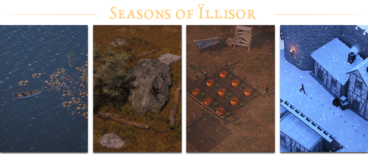
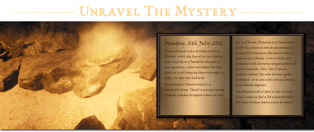
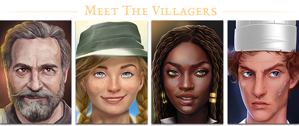

Gameplay
Tales from the Dancing Moon is a casual RPG set in Ïllisor – a fantasy seaside village recovering from a recent invasion of shadow-beasts. You are a newcomer, unsure of what has happened and why you ended up here.

From The Dancing Moon Inn to the Stoknel Swamp regions. Explore both hand-crafted and procedural zones with seasonal and weather effects, providing different moods to the game as time progresses.

Discover your purpose as you unravel the mystery of the missing teenagers who arrived before you and their entanglement between the tea-brewing Magisters and the deadly shadow-beasts.

Learn more about Ïllisor and it’s villagers by partaking in various activities like side-quests, farming, crafting and fishing. You can help rebuild the town from the recent invasion and get them back on their feet!
Will you discover your purpose and find a way back home? Or will you simply enjoy your time staying at The Dancing Moon?
Key Features
- A character driven story inspired by young-adult and portal-fantasy stories. Told via quests and reading diaries scattered across the world.
- A hybrid of RPG and life-sim with open-ended sandbox features.
- Questing, farming, crafting, building, fishing, cooking, combat – just to name a few things you can do!
- Season and weather effects.
- Free object placement and village building systems.
- Both hand crafted and procedural areas.
- Photo mode with many lens and filter options!
{kind=link}


{kind=link}
{kind=link}
{kind=link}
{kind=link}
{kind=link}
{kind=link}
{kind=link}
{kind=link}
{kind=link}